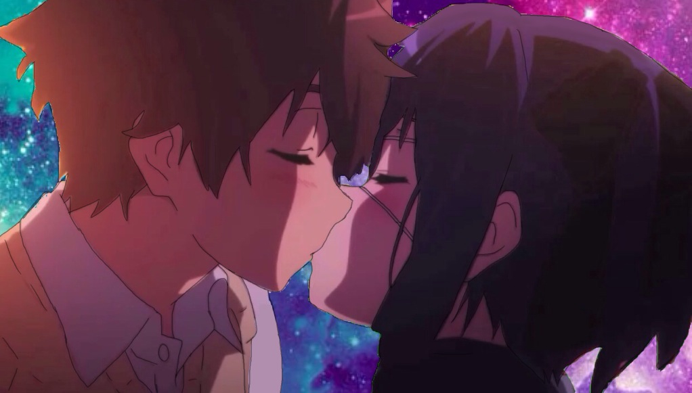
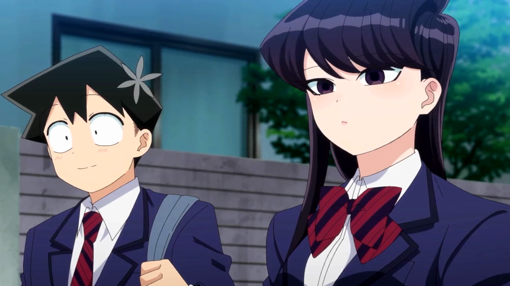
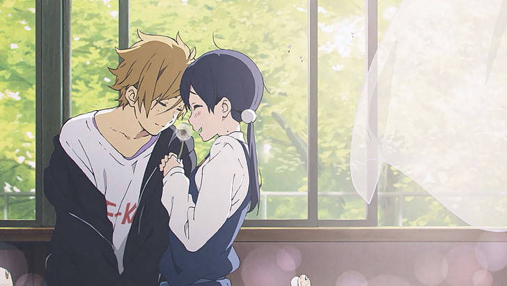
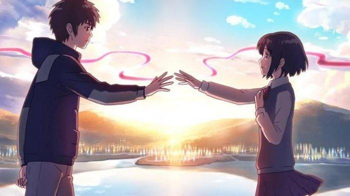
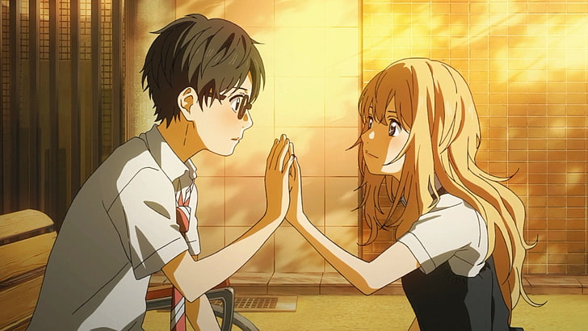
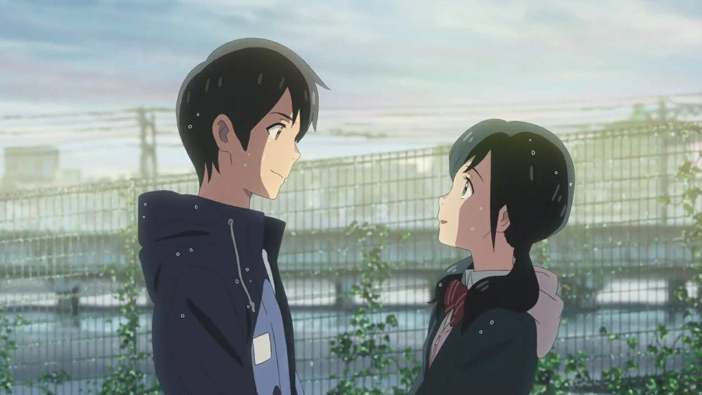
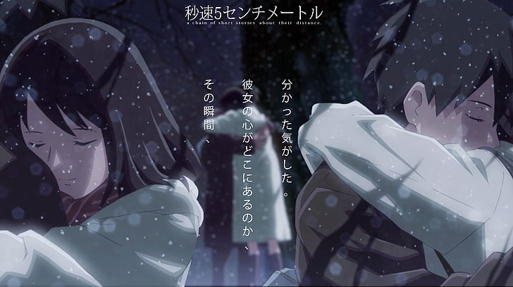
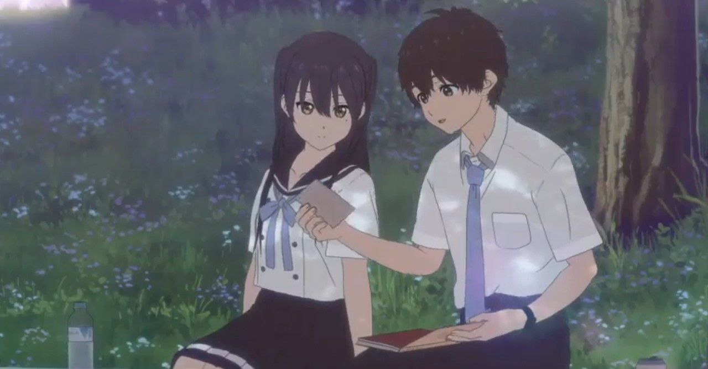

Chūnibyō Demo Koi ga Shitai!
Chūnibyō Demo Koi ga Shitai!, (中二病でも恋がしたい!, arti bahasa Indonesia: Cinta, Chūnibyō, dan Khayalan Lainnya!) kadang disingkat menjadi Chū-2, adalah sebuah serial novel ringan Jepang yang ditulis oleh Torako, dengan ilustrasi oleh Nozomi Ōsaka. Karya ini mendapatkan 'honorable mention' pada kompetisi Kyoto Animation Award pada tahun 2010. Sebuah adaptasi anime dengan 12 episode oleh Kyoto Animation tayang di Jepang sejak 4 Oktober dan 19 Desember 2012. Sebuah film dirilis pada September 2013 dan musim kedua anime, Chūnibyō Demo Koi ga Shitai! Ren, tayang antara Januari hingga Maret 2014.
Yūta Togashi adalah seorang anak laki-laki yang memiliki "penyakit" delusional pada masa SMP (中二病 chūnibyō?, lit. "penyakit SMP"). Ia percaya bahwa ia memiliki kekuatan supernatural dan menyebut dirinya sebagai "Dark Flame Master", yang mengakibatkan dirinya diasingkan oleh teman-teman sekelasnya. Merasa malu, Yūta mencoba untuk memasuki SMA yang berbeda dari teman-teman masa SMP-nya dan mencoba untuk melupakan masa lalu SMP-nya. Namun saat masa SMA-nya dimulai, Rikka Takanashi, seorang perempuan yang memiliki delusi tingkat tinggi mengetahui masa lalunya dan menjadi tertarik padanya. Seiring cerita berlanjut, Rikka menjadi lebih melekat pada Yūta. Meskipun Yūta menganggap delusinya mengganggu dan memalukan, ia tetap menerima Rikka. Dia membantu Rikka dalam sejumlah hal, termasuk mendirikan dan mempertahankan klub dan memberikan bimbingan belajar. Ketika Yūta ikut dalam liburan musim panas, Yūta mengetahui bahwa dua tahun sebelumnya, ayah Rikka, meninggal mendadak karena penyakit mematikan, menyebabkan Rikka jatuh ke dalam delusi nya. Setelah Yūta setuju untuk membantu Rikka dalam pencarian "Ethereal Horizon" (不可視境界線 Fukashi Kyōkaisen), yang ia percayai akan membawanya ke ayahnya, Rikka menjadi tertarik secara romantis pada Yūta, dan begitu juga sebaliknya.
Komi-san wa, Komyushou desu
Komi-san wa, Komyushou desu (bahasa Jepang: 古見さんは、コミュ症です。), diterbitkan di Indonesia dengan judul Komi Sulit Berkomunikasi, adalah seri manga shōnen Jepang yang ditulis dan diilustrasikan oleh Tomohito Oda. Manga ini pertama kali dimuat dalam majalah Weekly Shōnen Sunday terbitan Shogakukan sebagai sebuah bab one-shot pada bulan September 2015. Sementara serialisasi mingguannya dimulai sejak tanggal 18 Mei 2016 dengan beberapa perubahan dari versi one-shot. Seri ini telah dilisensikan dalam bahasa Inggris oleh Viz Media untuk wilayah Amerika Utara dengan volume pertamanya diterbitkan pada bulan Juni 2019. Sebuah adaptasi anime yang diproduksi oleh studio OLM dan dijadwalkan akan tayang pada bulan Oktober 2021.
Pada hari pertamanya masuk SMA Swasta Itan, Shouko Komi langsung menerima popularitas yang luar biasa karena kecantikannya yang bersahaja dan halus serta keanggunan yang menurut teman-teman sekelasnya sangat sempurna. Namun, hanya Hitohito Tadano—seorang anak sekolah berkemampuan rata-rata yang duduk di sebelahnya—yang memiliki kesempatan untuk menyadari bahwa di balik penampilan bishōjo-nya, Komi memiliki masalah serius dalam berkomunikasi dengan orang lain. Tadano berupaya untuk membantu Komi dalam usahanya untuk mendapatkan 100 teman.
Tamako Market
Tamako Market (たまこまーけっと Tamako Māketto) adalah seri anime televisi Jepang yang diproduksi oleh Kyoto Animation dan disutradarai oleh Naoko Yamada. Seri anime televisi ini tayang di Jepang sejak 10 Januari hingga 28 Maret 2013. Sebuah film sekuel dari serial ini berjudul Tamako Love Story tayang perdana pada bulan April 2014.
Tamako Kitashirakawa adalah anak tertua dari keluarga yang menjalankan toko mochi Tama-ya yang terletak Distrik Perbelanjaan Usagiyama. Suatu hari, Tamako bertemu dengan seekor burung aneh bernama Dera Mochimazzi yang datang dari tempat yang jauh untuk mencari pengantin untuk pangeran di negaranya. Setelah menjadi gemuk karena memakan mochi terlalu banyak, Dera menjadi penumpang di rumah Tamako. Seri ini mengikuti kehidupan sehari-hari Tamako bersama teman-temanya, keluarga, tetangga, dan burung aneh ini.
Your Name
Your Name. (bahasa Jepang: 君の名は。 Hepburn: Kimi no Na wa., harfiah: "Namamu.") adalah sebuah film animasi Jepang produksi tahun 2016 bertema fantasi yang ditulis dan disutradarai oleh Makoto Shinkai dan diproduksi oleh CoMix Wave Films.[3] Perancangan tokoh film ini dikerjakan oleh Masayoshi Tanaka, dan penciptaan musik dibuat oleh band rock asal Jepang Radwimps. Film ini dibuat berdasarkan novel karya Makoto Shinkai berjudul sama yang dirilis sebulan sebelum pemutaran perdananya tentang seorang siswi di pedesaan Jepang dan seorang siswa di Tokyo yang saling bertukar tubuh.[4] Film ini dibintangi oleh Ryunosuke Kamiki, Mone Kamishiraishi, Masami Nagasawa dan Etsuko Ichihara. Your Name. didistribusikan oleh Toho dan ditayangkan perdana di konvensi Anime Expo 2016 di Los Angeles, California pada 3 Juli 2016, dan kemudian ditayangkan di Jepang pada 26 Agustus 2016.[5][6][7] Film ini diputar di Jepang selama satu tahun penuh, tepatnya hingga 25 Agustus 2017.[8][9] Di Indonesia, film ini ditayangkan di jaringan CGV blitz, Cinemaxx dan Platinum Cineplex mulai 7 Desember 2016.[10] Film ini mendapat penerimaan luas yang baik daripada kritikus yang memuji film ini untuk animasi dan dampak emosionalnya, serta kesuksesannya secara komersial dengan menjadi film dengan pendapatan kotor keempat terbesar sepanjang waktu di Jepang,[11] film animasi tradisional dengan pendapatan kotor ketujuh terbesar, dan film anime dengan pendapatan kotor terbesar sepanjang waktu di seluruh dunia, dengan total pendapatan mencapai US$355 juta per 30 Juli 2017.[2] Film ini juga menjuarai Festival Film Sitges ke-49, Los Angeles Film Critics Association Awards tahun 2016, dan Mainichi Film Awards ke-71 untuk kategori Film Animasi Terbaik, serta menjadi nominasi dalam Japan Academy Prize ke-40 untuk kategori Animasi Terbaik Tahun Ini.
Your Lie in April
Shigatsu wa Kimi no Uso (四月は君の嘘 Your Lie in April, terj. har. Dustamu di Bulan April) adalah sebuah serial manga drama romansa Jepang yang ditulis dan diilustrasikan oleh Naoshi Arakawa dan diterbitkan oleh Kodansha di majalah Monthly Shōnen Magazine dari April 2011 hingga Februari 2015. Serial ini menceritakan kehidupan seorang anak bernama Kousei Arima, yang berbakat dalam memainkan piano. Ketika ibunya meninggal dunia, ia mengalami tekanan mental yang membuatnya kehilangan kemampuan untuk mendengar suara piano. Serial ini juga menceritakan pengalamannya dengan seorang pemain biola bernama Kaori Miyazono Serial manga ini diadaptasi oleh A-1 Pictures sebagai serial anime televisi yang disiarkan dari Oktober 2014 hingga Maret 2015 di Fuji TV pada blok Noitamina. Serial ini juga diadaptasi menjadi sebuah novel ringan serta film laga hidup (live action) yang ditayangkan di bioskop di Jepang pada September 2016.
Kousei Arima adalah seorang anak yang berbakat dalam bermain piano dan selalu tampil mendominasi dalam berbagai kompetisi, sehingga menjadikannya terkenal di antara para musikus cilik. Setelah ibunya meninggal dunia, ia mengalami tekanan mental di tengah-tengah sebuah pertunjukan piano pada usia 12 tahun. Trauma yang diderita olehnya menyebabkan ia kehilangan kemampuan untuk mendengar suara dentingan piano, meskipun secara fisik pendengarannya baik-baik saja. Dua tahun berlalu, Kousei tidak pernah menyentuh pianonya dan beranggapan dunianya sebagai dunia yang monoton tanpa warna. Dia pun seakan melepas kehidupannya dan hanya berinteraksi dekat dengan kedua sahabatnya, Tsubaki Sawabe dan Ryota Watari; hingga pada suatu hari, Ia bertemu dengan seorang gadis yang sebaya dengannya. Gadis tersebut adalah Kaori Miyazono, seorang pemain biola yang bersifat ceria dan penuh semangat serta memiliki gaya bermain musik yang bebas dan berekspresif, berbeda dengan gaya bermain Kousei yang kaku dan terstruktur. Setelah Kaori mengikuti suatu kompetisi, ia mengajak Kousei untuk menjadi pengiring pianonya, walau ia harus menghadapi trauma yang ia derita. Lama-kelamaan, Kaori menuntun Kousei kembali ke dunia musik dan menunjukkan bahwa memainkan musik adalah sebuah hal yang perlu diresapi menggunakan perasaan dan imajinasi. Kousei secara perlahan menemukan makna baru dalam memainkan musik. Ia pun menaruh perasaan suka kepada Kaori, walaupun kelihatannya Kaori menyukai Watari. Saat suatu pertunjukan, Kaori terjatuh dan dirawat di rumah sakit. Setelah beberapa hari, ia meminta Kousei untuk berduet dengannya; namun, Kaori tidak dapat datang karena kesehatannya memburuk. Kousei kemudian bermain duet dengan Nagi Aiza, dengan harapan untuk memotivasi Kaori yang sedang melakukan operasi. Saat sedang tampil pada sebuah kompetisi finalis, Kousei melihat roh Kaori yang menemaninya. Ia pun sadar bahwa Kaori telah meninggal dunia saat proses operasi. Saat pemakaman Kaori, Kousei menerima sebuah surat dari orang tua Kaori. Surat tersebut berisi tulisan Kaori yang menjelaskan bahwa saat masih kecil, ia terpesona dengan permainan Kousei. Ia juga menuliskan berbagai hal yang ia lakukan untuk menjadi lebih dekat dengan Kousei. Ia berbohong terhadap perasaan yang ia berikan kepada Watari, agar tidak menyakiti Tsubaki yang menyukai Kousei. Kaori juga sadar kalau ia akan meninggal, karena itu, ia menjadi lebih ceria dan berjiwa bebas dalam hidupnya, agar tidak membawa penyesalannya ke Surga. Setelah mengetahui apa yang terjadi, Tsubaki menenangkan Kousei dan berjanji untuk berada pada sisinya seumur hidupnya.
A Silent Voice

A Silent Voice: The Movie (bahasa Jepang: 映画 聲の形 Hepburn: Eiga Koe no Katachi, juga diterjemahkan sebagai The Shape of Voice: The Movie) adalah sebuah film drama remaja animasi Jepang tahun 2016 yang diproduksi oleh Kyoto Animation, disutradarai oleh Naoko Yamada dan ditulis oleh Reiko Yoshida, menampilkan desain karakter karya Futoshi Nishiya dan musik karya Kensuke Ushio.[3] Film ini diadaptasi dari manga berjudul sama yang ditulis dan diilustrasikan oleh Yoshitoki Ōima. Film ini diputar perdana di Jepang pada tanggal 17 September 2016 dan di seluruh dunia antara bulan Februari dan Juni 2017.
Weathering with You
Weathering with You (bahasa Jepang: 天気の子 Hepburn: Tenki no Ko, terj. har. "Anak [Sang] Cuaca") adalah sebuah film animasi drama romantis Jepang bergenre fantasi yang ditulis dan disutradarai oleh Makoto Shinkai, yang dikenal atas film karyanya pada tahun 2016 berjudul Your Name. Weathering with You berlatar di Jepang yang dilanda cuaca hujan yang sangat deras. Film ini mengisahkan tentang Hodaka Morishima, seorang remaja SMA yang pergi ke Tokyo dan berteman dengan seorang anak gadis yatim bernama Hina Amano, yang mampu memanipulasi cuaca. Film ini diproduksi oleh CoMix Wave Films, Genki Kawamura, dan Story Inc., sementara musiknya diciptakan oleh Radwimps. Film ini ditayangkan di Jepang pada tanggal 19 Juli 2019. Sebuah adaptasi novel yang ditulis oleh Shinkai, diterbitkan pada tanggal 18 Juli 2019, sehari sebelum penayangan film. Novel tersebut merupakan salah satu karya orisinalnya. Sebuah adaptasi manga yang diilustrasikan oleh Watari Kubota mulai dimuat berseri dalam majalah Afternoon terbitan Kodansha pada tanggal 25 Juli, enam hari setelah film ini diterbitkan. Film ini dipilih sebagai perwakilan Jepang untuk Film Internasional Terbaik pada acara Academy Awards ke-92.
Byōsoku 5 Centimeter
Byōsoku 5 Centimeter (Byōsoku Go Senchimētoru, 5 Centimeters Per Second, lit. "Lima Sentimeter per Detik") merupakan sebuah film anime Jepang tahun 2007 oleh Makoto Shinkai. Film ini tamat ditayangkan pada tanggal 22 Januari 2007.[2] Bagian pertama film ini telah ditulis di Yahoo! Jepang sebagai streaming video khusus pengguna Yahoo! Premium pada tanggal 16 Februari hingga 19 Februari 2007.[3] Pada tanggal 3 Maret 2007, film lengkapnya telah ditayangkan sebagai tayangan perdana di Cinema Rise di Shibuya, Tokyo.[4] Film tersebut terdiri dari tiga episode atau bagian: Ōkashō (桜花抄), Cosmonaut (コスモナウト), dan Byōsoku 5 Senchimētoru (秒速5センチメートル), dengan total waktu tayang keseluruhannya adalah satu jam. Sebagaimana film-filmnya yang sebelumnya, soundtrack film ini digubah oleh Tenmon. DVD Byōsoku 5 Centimeter dikeluarkan pada tanggal 19 Juli 2007. Novel 5 Centimeters Per Second yang merupakan pengembangan cerita dari versi filmnya juga dibuat.[5] Versi manganya yang berbetuk serial diterbitkan oleh Afternoon mulai bulan Juli 2010, diilustrasikan oleh Seike Yukiko.
Hello World
Hello World (atau HELLO WORLD) adalah film animasi Jepang 2019 yang disutradarai oleh Tomohiko Itō dan diproduksi oleh Graphinica. Film ini akan disajikan sebagai karya animasi pertama Tomohiko sejak film sebelumnya Sword Art Online The Movie: Ordinal Scale dirilis pada 2017. Film ini akan dirilis di Jepang pada 20 September 2019, dibintangi oleh Takumi Kitamura, Tori Matsuzaka, dan Minami Hamabe.[1][2] Tiga episode Spinoff anime berjudul Another World akan tayang perdana pada 13 September 2019.
Film ini akan menjadi kisah perjalanan waktu yang ditetapkan pada tahun 2027 di Kyoto, Jepang. Dikatakan sebagai cerita bahwa "tidak ada yang pernah melihat seseorang menemukan diri mereka" meskipun dengan "adegan, pandangan, dan cahaya yang semua orang tahu.